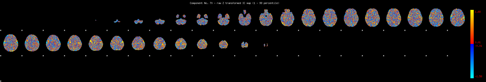
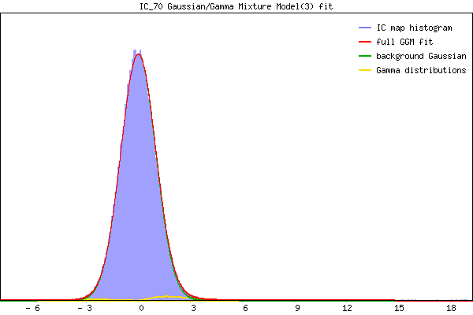

IC_70 Mixture Model fit
Means : 0.000000 2.387830 -2.641959
Vars : 1.000000 1.799494 0.653913
Prop. : 0.977956 0.018091 0.003953
This page produced automatically by MELODIC Version 3.15 - a part of FSL - FMRIB Software Library.